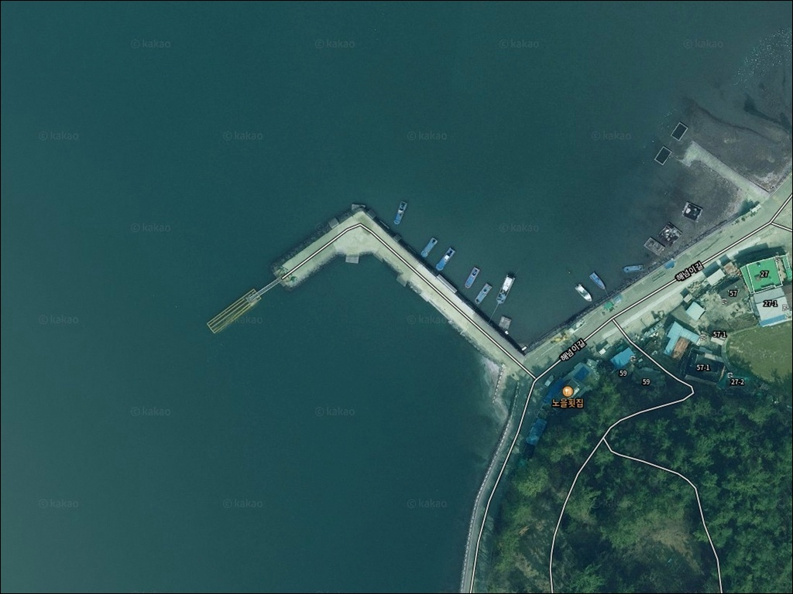
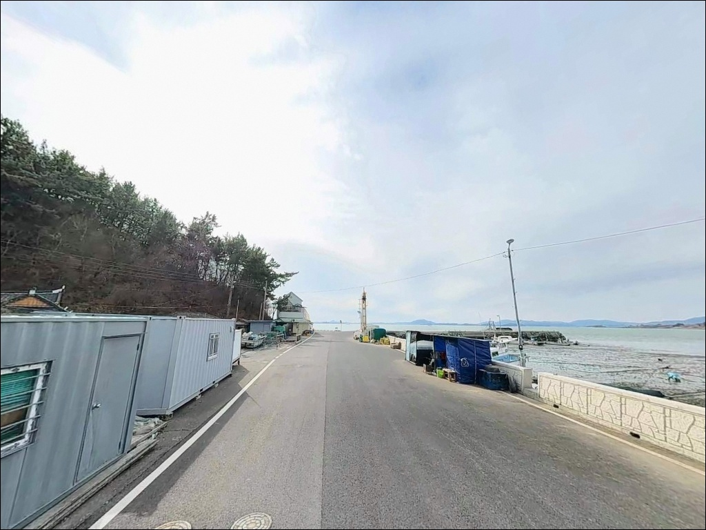
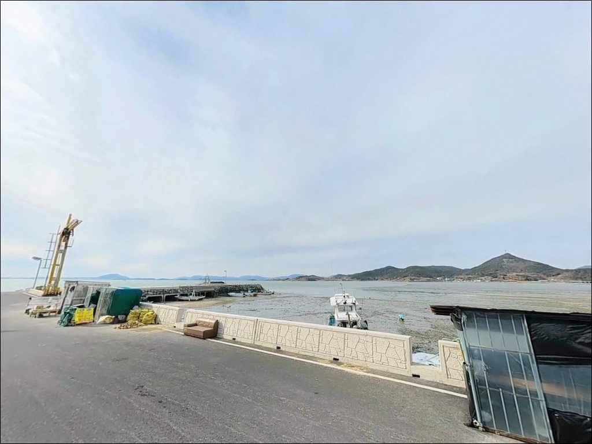
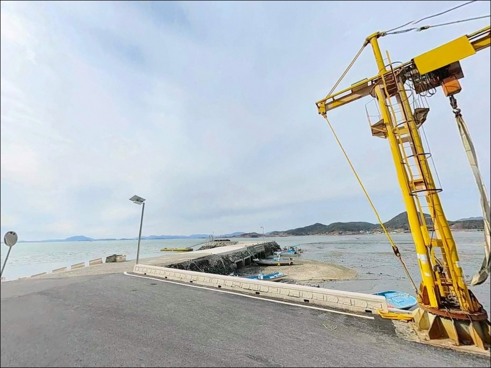
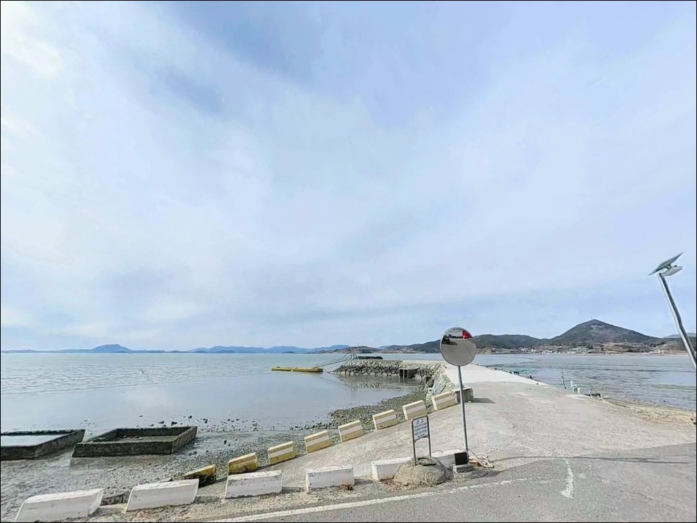
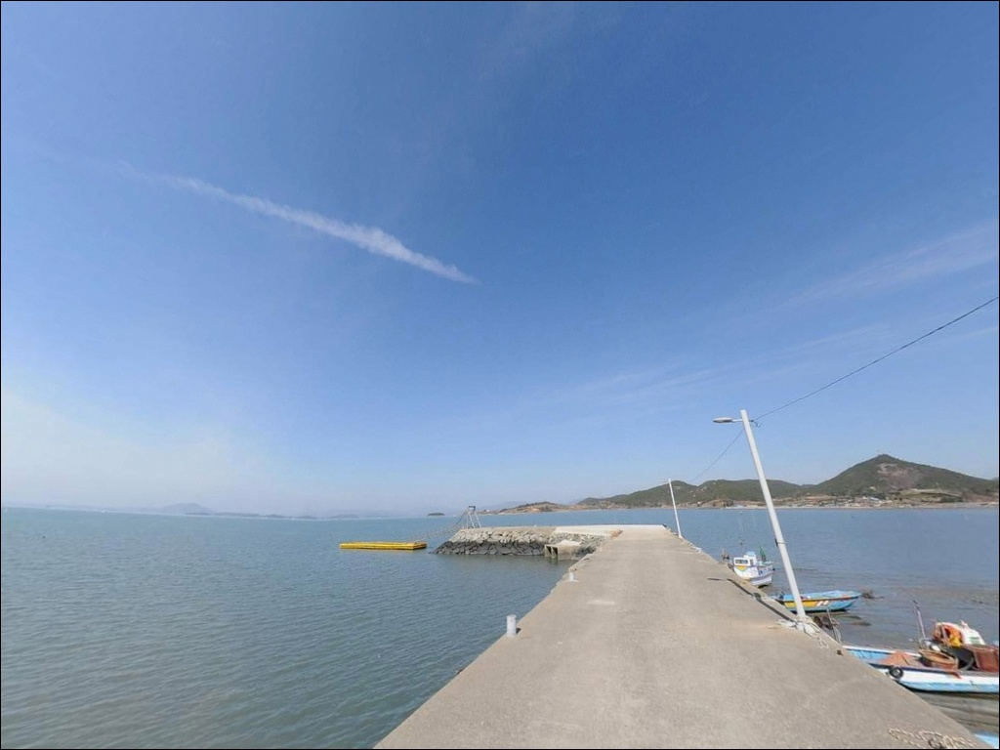
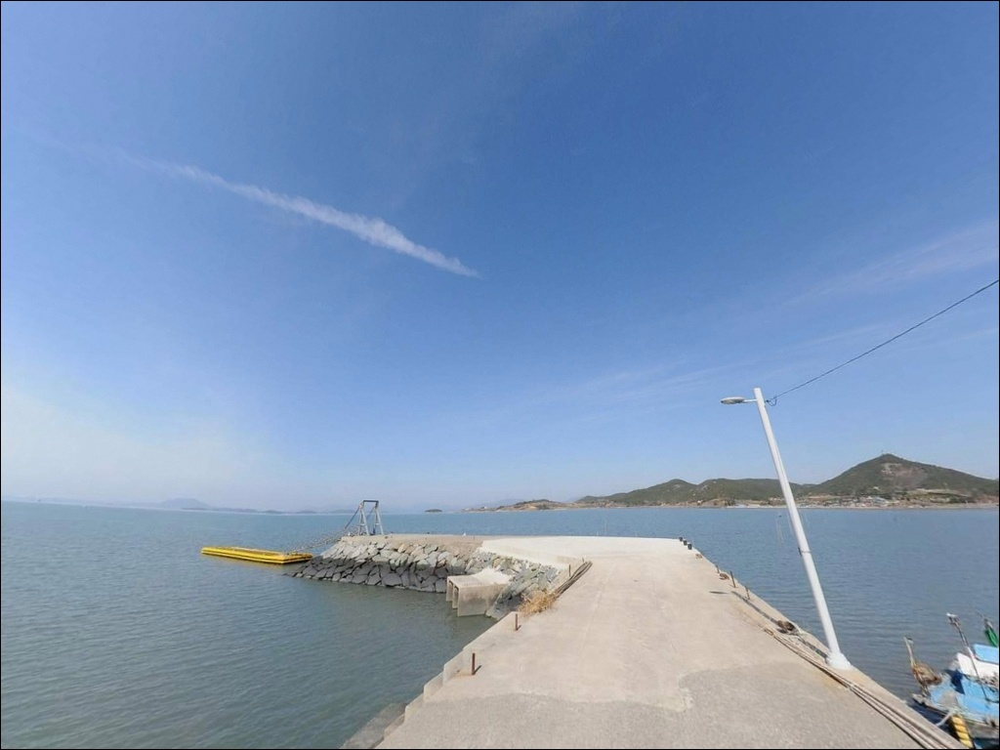
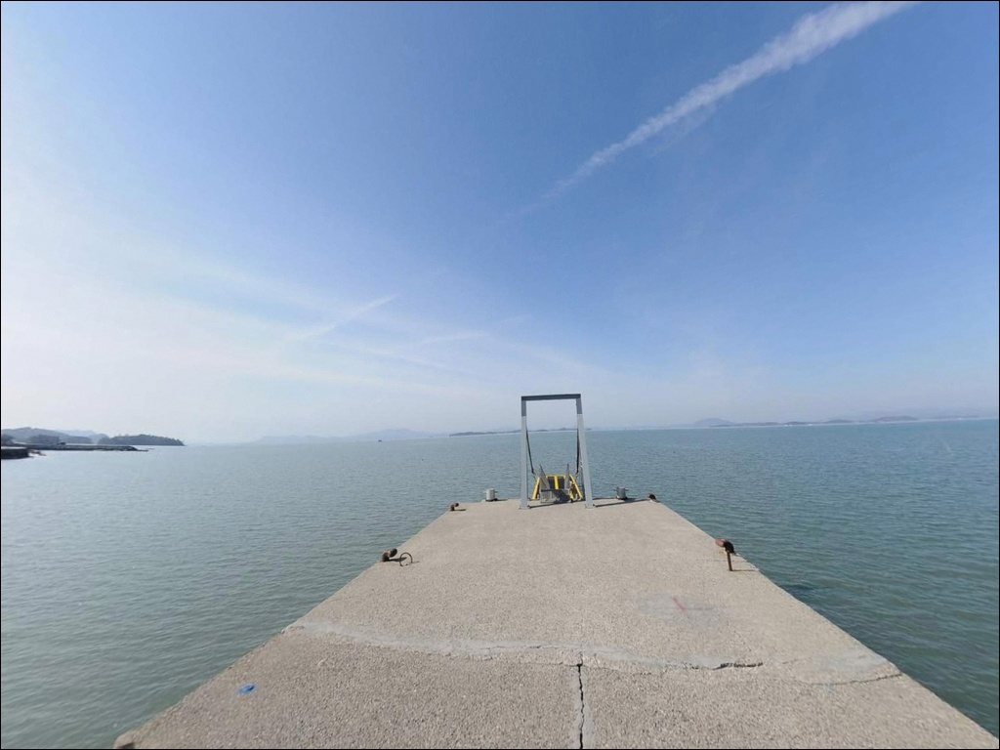
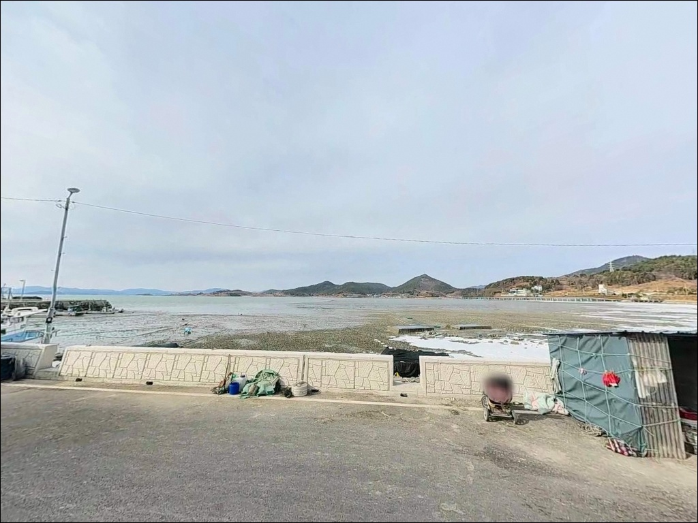

간조 시 수심 크게 낮아지는 여수 해넘이방파제, 만조 전후 3시간 원투낚시
이 페이지에는 광고(제휴 링크 포함)가 있으며, 광고 링크를 통해 구매하면 운영자가 판매 수익 또는 수수료를 받을 수 있습니다. 포인트 사진: 카카오맵 스카이뷰·로드뷰. 이 페이지의 지도·사진 이미지는 카카오맵의 실제 서비스 이미지와 다를 수 있습니다.


포인트 안내
해넘이방파제
전남 여수시 소라면 사곡리 1067-9
해넘이방파제를 처음 찾는 낚시인이
가장 많이 놓치는 판단이 간조 타이밍입니다.
여자만 내만 특성상 간조 시 수심이 크게 낮아지고,
어떤 채비를 써도 바닥층 어종 접근이
어려운 상황이 됩니다.
만조 전후 3시간을 기준으로
출발 시각을 맞추는 것이
이 포인트 공략의 출발점입니다.
이 글은 해넘이방파제의
물때 기반 낚시 조건, 진입 동선,
차박 여건, 주변 인프라를 중심으로 정리했습니다.
조황 단정이나 특정 어종 보장은
이 글의 범위에 포함되지 않습니다.

1. 진입 동선과 포인트 접근성
해넘이방파제는 여수 시내에서
해안도로를 따라 소라면 사곡리 방향으로
연결되는 왕복 2차선 도로가
방파제 입구까지 그대로 이어집니다.
대형 캠핑카와 버스급 차량도 진입에 무리가 없는
포장 상태로, 이 일대 방파제 중
접근성이 가장 우수한 편입니다.
방파제 초입과 중간 지점, 끝단 모두
광장 수준의 넓은 부지가 확보되어 있어
회차가 매우 자유롭습니다.
주차는 방파제 입구 공영주차장을
기본으로 이용하며,
방파제 내측 평단면에도 차량 배치가 가능합니다.
여수 방향 해안선 포인트치고
주차 여건이 넉넉한 편입니다.
낚시 자리는 방파제 끝단부가
가장 공간이 넓습니다.
밑걸림이 거의 없는 평탄한 지형이라
채비 손실 부담 없이 외측으로
자유롭게 투척할 수 있습니다.

2. 차박 환경과 야간 체류 여건
해넘이방파제는 여수시가
일몰 명소로 조성한 공간입니다.
가로등 시설이 방파제 구간 전체에 걸쳐 우수하게
설치되어 있어 야간 낚시와 차박 시
시야 확보가 용이합니다.
완전 암흑 환경이 아니라
밤에도 안전성이 높은 편입니다.
인근에 대형 카페와
소규모 방문객 시설이 포진해 있어
야간에도 일정한 유동 인구가 존재합니다.
완전한 고립형 차박보다는
낚시 후 편안하게 하룻밤 머무는 체류형에
가까운 환경입니다.
여자만 내만이라 파도 영향이 거의 없고
수면이 잔잔해 차 안에서도
조용하게 지낼 수 있습니다.


3. 주변 편의시설 및 인프라 현황
방파제 입구 공원 내에
공중화장실이 상시 운영됩니다.
낚시 포인트 내 화장실 여건으로는
여수 서부 해안 방파제 중
가장 양호한 수준에 속합니다.
인근에는 편의점 규모의 매점과
대형 카페가 여러 곳 위치해 있어
식수와 간식 보충이 어렵지 않습니다.
사곡리 일대에는
장어구이 전문점을 포함한
현지 식당이 운영 중입니다.
반경 10km권 이내에
소라면 죽림리 신시가지가 있어
편의점, 주유소, 식당이
집중 분포합니다.
여수 시내까지는 차량으로 약 15분 거리이며
이마트, 롯데마트, 대형 낚시용품점
이용이 가능합니다.

4. 방문 전 반드시 확인해야 할 준비사항
이 포인트에서 가장 먼저 해야 할 준비는
물때 확인입니다.
여자만 내만 구조상 간조와 만조의
수심 차이가 상당한 편입니다.
바다타임에서 여수·사곡리 기준
물때를 미리 확인하고,
만조 전후 3시간 피딩 타임에
맞춰 출발 시각을 설정하는 것이
가장 중요한 사전 작업입니다.
원투낚시를 주력으로 할 계획이라면
갯지렁이와 참갯지렁이 미끼를
충분히 준비하는 편이 좋습니다.
루어와 에깅을 병행할 계획이라면
가을철(9~11월) 갑오징어·주꾸미 시즌에
방문하는 것이 이 포인트의
지형 조건과 가장 잘 맞는 타이밍입니다.
방파제 끝단은 난간이 없는 구간이 있습니다.
야간 낚시 시 구명조끼와 헤드랜턴은
필수이며, 공원 구역 내에서
지면 직접 취사는 금지되어 있습니다.
차박 조리 시 전용 장비를 사용하고
화재 예방에 유의해야 합니다.

5. 지형 기반 낚시 여건 분석
해넘이방파제는 육지에서
바다 방향으로 길게 뻗은
일자형 선착장 형태입니다.
끝단부가 넓게 조성되어
낚시 공간이 넉넉하고,
바닥은 펄과 모래가 섞인 지형으로
밑걸림이 거의 없는 평탄한 구조입니다.
원투 채비를 멀리 보내도
걸림 없이 회수가 가능합니다.
여자만은 여수반도 북서쪽과 순천 사이에
형성된 반폐쇄형 내만으로
외해 파도가 직접 들어오지 않습니다.
수면이 잔잔하지만,
수로 역할을 하는 구간이 포함되어 있어
물때에 따라 조류 소통이 살아납니다.
방파제 끝단 기준으로
외측 30~70m 구간이 주요 투척 포인트입니다.
간조 시 바닥이 드러나는 구간이 있고
수심이 낮아지는 편이라,
만조 전후 3시간이 바닥층 어종
접근에 가장 유리한 타이밍입니다.
이 일대 여자만 해역에서 기대해 볼 수 있는 어종은
망둥어, 숭어, 보리멸, 붕장어, 도다리이며
가을철에는 갑오징어와 주꾸미도
활성이 오르는 편입니다.
출조 전에 최신 조황은
꼭 검색해 보시기 바랍니다.


6. 포인트에 어울리는 낚시 스타일
이 포인트에서 가장 기본이 되는 방식은
원투낚시입니다.
펄·모래 혼합 바닥과
방파제 끝단에서 외측으로 열린
탁 트인 구조가 원투 채비에 최적화되어 있습니다.
갯지렁이 미끼를 달아
외측 30~70m 구간을 집중 공략하는 방식이
이 포인트 지형에 가장 잘 맞습니다.
가을철에는 루어낚시가 활발해집니다.
9월부터 11월 사이
갑오징어와 주꾸미 에깅 낚시가
이 일대에서 이루어지는 편이며,
방파제 벽면과 바닥 펄 경계 지점을
공략하는 방식이 효과적입니다.
에깅 채비와 원투낚시를
상황에 따라 전환하며 운용하면
시즌 피크 때 대응 폭이 넓어집니다.
찌낚시도 이 포인트 구조에 맞는 방식입니다.
사리 물때에 조류가 강하게 흐르는 구간에서
릴찌 채비로 숭어를 노릴 수 있고,
가을철에는 감성돔도
찌낚시 대상어로 기대해 볼 수 있습니다.
조류 흐름이 살아 있는 만조 전후에
찌를 흘려 탐색하는 방식이
이 포인트 지형과 맞습니다.

7. 조류 약할 때 대안 포인트와 플랜 B 동선
해넘이방파제 조황이 기대에 못 미치거나
주차 공간이 여의치 않을 경우,
가장 가까운 대안은
달천도 방파제입니다.
사곡에서 북쪽으로 교량을 건너
진입하는 포인트로,
비슷한 여자만 내만 지형 조건에서
좀 더 한적한 낚시가 가능합니다.
루어낚시나 에깅 위주로
이동을 고려한다면
여수 돌산의 국동항이
수심이 깊고 조류 영향이 있는
외해형 포인트로 활용도가 높습니다.
진입과 편의시설 모두 안정적이어서
해넘이방파제를 첫 번째,
국동항을 두 번째 동선으로 묶는
이동 루트가 효율적입니다.
차박을 더 조용한 환경에서
즐기고 싶다면
사곡 남단으로 이동하면 나오는
가사리 생태공원 주차장이
한적한 스텔스 차박지로 적합합니다.

물때 하나 맞추면
해넘이방파제가 달라집니다
원투낚시 위주의 편안한 생활낚시를 즐기는
낚시인에게 이 포인트는
여건이 잘 맞는 구조입니다.
가을 시즌에는 갑오징어 에깅까지
병행할 수 있어
복수 스타일 운용이 가능합니다.
공영주차장과 화장실을 갖춘
일몰 명소라는 점에서
가족 동반 차박 낚시지로도 활용도가 높습니다.
반면 만조 타이밍을 맞추지 않고 진입하거나,
루어와 에깅만을 목적으로
깊은 수심을 기대한다면
여자만 내만 구조상 실망할 수 있습니다.
물때 확인, 원투 중심 채비 준비,
가을 에깅 병행,
이 세 가지를 갖추고 간다면
여수 서부 해안에서 기억에 남는
출조가 될 수 있는 포인트입니다.
해 떨어지는 방향으로 차를 세우고
원투 채비를 물골 방향으로 던져두면,
여자만 노을과 낚시를 동시에 즐길 수 있는
조용한 하루가 기다리고 있습니다.